Industrial Reference Project
This section will walk through the objects included in our reference project for a typical industrial use case and provide you with some benchmarks for which settings and parameters work well in these types of environments. You can use the reference project to learn more about Quuppa projects or as a template for your own custom project files.
Download our industrial reference project file from here.
The reference project provides good rules of thumb for similar deployments but please remember that variations in your environment may affect the optimal settings for your deployment. To find the best settings, we recommend that you always simulate and test your project thoroughly before deploying the system.
Also, as you work with the project file, remember to save it every now and then to make sure you don't accidentally lose any of the edits that you have already made.
1. Project File
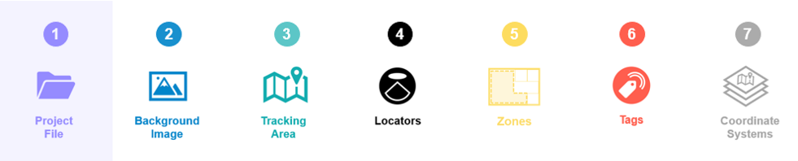
The industry reference project uses default settings that work for common industrial use cases. If you are using the reference project as a template for your own project, you can edit these default settings to better suit your deployment environment.
For industrial deployments, use the following guidelines for defining the default project settings:
| Recommended Selection | Explanation | |
|---|---|---|
| PROJECT NAME: | ||
| Project Name | Provide a descriptive name for your project (e.g. QuuppaIndustrial) | A descriptive name will help you to identify the project from other projects later on. |
| OPERATION MODE: | ||
| Operation Mode | Proprietary | The proprietary mode The proprietary mode reduces the amount of potential interference from Bluetooth signals sent by other devices. However, other Bluetooth traffic is not typically an issue on industrial sites and the use of BLE mode can be suitable if required by the use case (e.g. smart tool tracking) |
| LOCATION DEFAULTS: | ||
| Installation height (m) | 7.5m | The locator installation height can differ significantly between different industrial sites. It is important to understand your environment. |
| Default Locator type | Q35 | For Industrial environments , the recommended Locator type is Q35. |
| TRACKING AREA DEFAULTS: | ||
| Tracking area type | Semi-confined | Industrial spaces are typically semi-confined spaces. |
| Tracking plane height | 1.20m | Industrial use cases may require several different types of objects to be tracked: assets, people, vehicles etc. Define different tracking planes for different tracked objects if their tracking heigh differs more than 0.5 m. |
2.Background Image
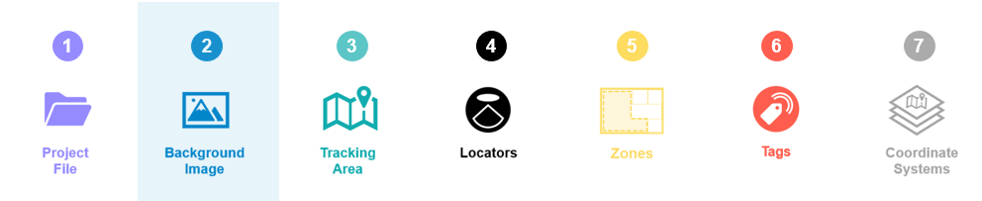
A background image should be used, as it provides a good visual reference and helps with the positioning of the Locators within the project. Even though the system does not ‘read’ the background image (i.e. identify walls and other structures marked in the map), it will help you build the required elements into your project file (e.g. zones, smart zones and tracking area edges).
However, it is good to remember that the background image is only as good as it is accurate. If the map is not up to date, it can be misleading. If it is not very good quality, it can lead to inaccurate measurements that affect positioning accuracy. Most importantly, if it is not scaled well, it will throw off any generated positioning data, reducing the accuracy of the system. For these reasons, we recommend that you use the most detailed and high quality background image that you can find and scale it carefully before use.
When scaling a background image, it is a good idea to use known and fixed measuring points within the space (e.g. primary walls or pillars) as these are more likely to be reflected accurately in the floor plan. Additionally we recommend that you use longer measurements for scaling where possible (e.g. the length of a corridor vs a small room) as this will provide more accurate scaling measurements. This is because any errors in distance measurements will multiply in the scaling process. We also recommend taking a few additional reference measurements within the map to double check that the scaling matches the real space.
If you are using the reference project as a template, you can delete the image that comes with the reference project file and add your own background image instead. Just remember to scale it as accurately as you can.
3. Tracking Area Polygon
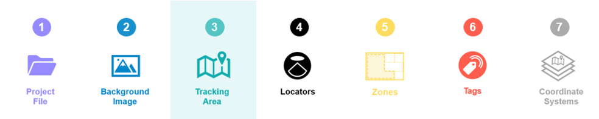
In the reference project, you can see that the tracking area polygon has been modified to fit the edge of the area that will be tracked (as opposed to the edge of the background image, as is generated automatically by the QSP when using the New Project Wizard). This is important as this defines the area that is tracked for the QPE.
As Industrial deployments are often indoor deployments, the edge of the tracking area is typically set to follow the inner edge of the building's main walls. This means that the QPE will only track tags moving inside the building. As the tags cannot physically enter the wall, there is no reason to include the wall in the tracking area for the project.
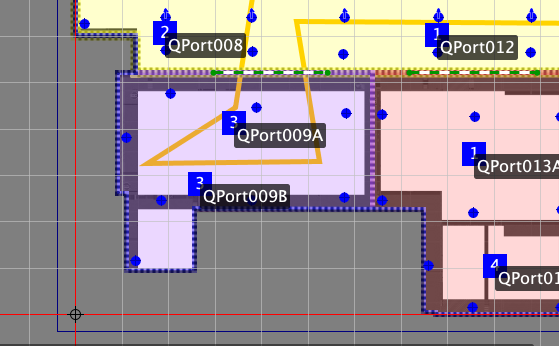If you are using the reference project as a template, modify the tracking area polygon to fit the desired tracking area for your deployment.
4. Locators, Coverage & Sensitivity Settings
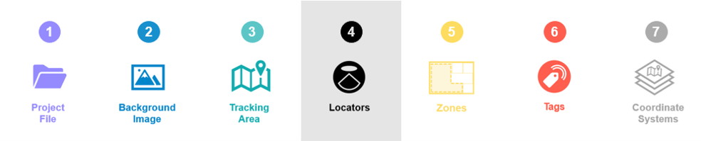
In the reference project, you can see that Locators have been distributed relatively evenly around each tracking area (with one tracking area per coordinate system). This is the best way to get good and even coverage across the tracking area and ensure the accurate positioning results even at the edges of the deployment.
The Locator sensitivity for the reference project has also been optimised for industrial environments. This reduces unnecessary load for the server machine and the Quuppa Positioning Engine (QPE) as now only the Locators near the tag will ‘hear’ it. A level of about -12dB is typically a good starting point for industrial deployments. However, as the optimal sensitivity level is always case-specific, it is important to test and tweak the figure for different projects using the Render noise option in the QSP's Coverage Estimate tool.
If you are using the reference project as a template for your own project, make sure to:
- Add Locators to the project file as needed. When adding Locators to a
project file, we recommend that you use the Locator Distributor Tool to make sure
they are evenly distributed around the tracking area. If you need to add
Locators one by one, we recommend that you start at the edges of the tracking
area and work your way in to ensure even coverage.
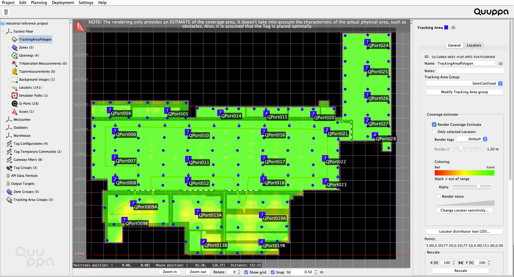
- Use the coverage estimate tool to check
the project looks good from a coverage perspective. We recommend that
you check the results for both the Render Coverage Estimate and the
Render noise options to make sure that your project is well tuned.
Good coverage is indicated with the colour green for both. If the coverage
estimate rendering looks yellow, you might consider adding some more Locators to
the project and if your noise rendering is very blue, you can tune the Locator
sensitivity settings for your project to prevent unnecessary system load (to
learn more about the sensitivity setting, please read Edit Locator
Sensitivity). In this Industrial reference project, higher accuracy
is required in the two production areas, but accuray does not need to be so
precise in, for example, in the Logistics and Rework areas.Tip: As you tune the coverage, remember that the system does not see the walls or other physical obstacles in your environment, so use the coverage estimate as a benchmark and then evaluate the need for Locators and their placement yourself based on the deployment environment. However, it is good to remember that the majority of walls in office spaces are typically thin and so radio signals can pass through them without problem and concrete walls also let radio signals pass quite well.Note: The area type (i.e. semi-confined or confined) selected also affects the coverage estimate and positioning calculations made by the positioning engine, so make sure to select the appropriate area type before evaluating the coverage estimate.
5. Zones, Smart Zones & Zone Groups
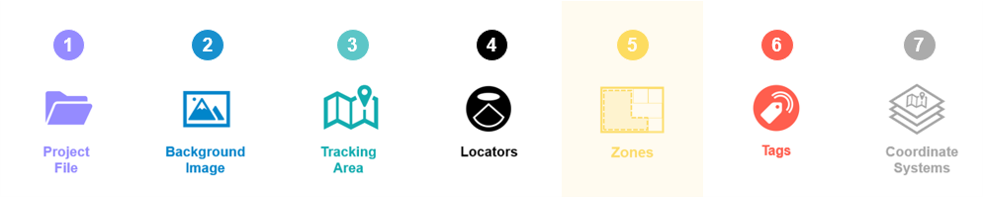
The industrial reference project uses a combination of zones, smart zones and zone groups to create geofencing areas that are easy to manage.
The zones provide filtering for positioning data generated by the QPE (e.g. tag1 is now in zone Production2) and the smart zones enable the defining of physically separated areas within the tracking area for the QPE (e.g. walls or other physical structures that tags cannot pass through).
There is no official limit to the number of zones that you can have in a project, but it is also unnecessary to cover the tracking area with zones and smartzones, unless you really need geofencing options everywhere. Remember that the system will provide tracking for the whole tracking area, the zones are just there to trigger geofencing possibilities.
If you are using the reference project as a template, you can duplicate the zones and smart zones by copying and pasting them. You can also move them to the right place for your deployment by dragging them across the map view with your mouse. To edit their shape, select the object and click the Edit polygon button in the panel on the right.
We always recommend the use of zone groups for different types of zones as they give you access to all of the zones features and enable you to adjust the settings for all zones in that group just by changing the settings for the group. This will save you time later, if you notice that you need to adjust the settings that you selected when you first designed the project.
6. Tag Groups & Tag Configurations
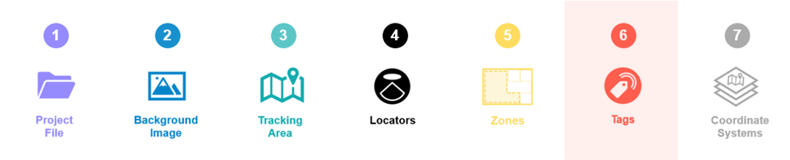
The reference project uses two of the default tag configurations provided by the QSP: ASSET_TAG for tracking shopping baskets and trolleys and ID_BADGE for tracking employees. These default configurations are configured for optimal performance for such use and so it is a good idea to use them whenever they are applicable.
The tags in the reference project have also been assigned to tag groups for easy management. This means that any changes to their configurations can be made for the tag groups as a whole, making it much easier to manage any later changes to tag configurations.
If you are using the reference project as a template, you can edit, add and remove tag groups to suit the needs of your project.
7. Additional Coordinate Systems
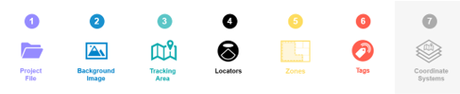
The reference project has four coordinate systems for three different areas: Factory Floor, Mezzanine, Outdoors and Warehouse.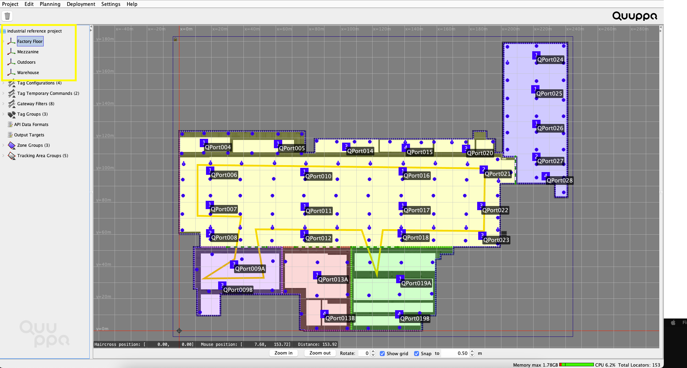
A separate coordinate system for different physical locations or floors is very typical for Industrial projects, as the system can be deployed on more than one floor and, possibly, separate buildings. This reference project contains the factory floor, a mezzanine on a higher floor within the factory building, an outdoor area and a separate warehouse. As individual coordinate systems should logically separate physical spaces, this makes sense for industrial buildings where each floor can often be a self-contained area.
Each coordinate system can then be customised according to the needs of that coordinate system. For example, the Locator distribution may be different due to structural differences and the zones may be arranged differently due to differing geofencing needs.
8. Q-Lite
The Warehouse and Mezzanine coordinate systems use Q-Lite and require fewer Locators. This reduced-accuracy tracking method can be used in situations where it is only necessary to know if a tag is present within a specific area or not. i.e. is the tag in the warehouse or not; its precise location is not required.
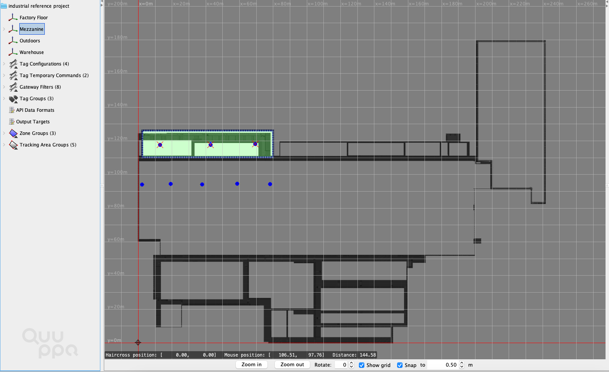
Summary
These are the key objects and settings included in our Industrial reference project. Feel free to use the reference project file as needed. You can edit the file to test different settings, or run a simulation using the Quuppa System Simulator (QSS) or use it as a template for your own project.
For more detailed instructions on how to use the QSP features, please refer to our Quuppa Site Planner User Manual or other documents available on our documentation site. Also feel free to contact us (support@quuppa.com) if you have any questions.